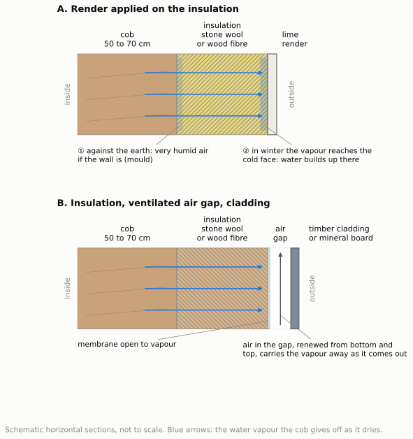
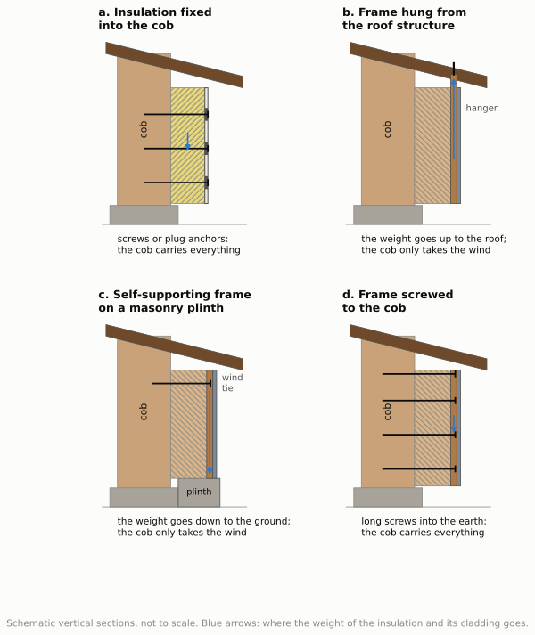
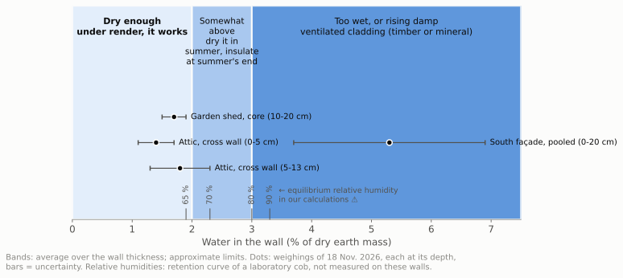

Data and code
This topic is a synthesis: it publishes no readings of its own. It
relies on the measurements of the Screws in cob and Moisture in cob topics, and
on our moisture calculations, not published so far. The
ite-sur-la-terre/
folder of the GitHub repository holds the code of the figures. Text and
figures under CC BY 4.0; code under the MIT licence.
Code
Python 3 with matplotlib. The figures are schematic diagrams; the only numbers drawn (published weighings, water content / relative humidity correspondences from our calculations) are written in the script with their source. From the repository root:
python3 ite-sur-la-terre/code/figures_ite.py # the three figures (French and English)
make construire # everything, plus this websiteFigures



How to cite
Rémi Cura (2026). External insulation on earth. In: Renovating earth buildings: field notes, data and code repository, https://github.com/Remi-C/renovation-terre-crue. DOI: 10.5281/zenodo.24504812